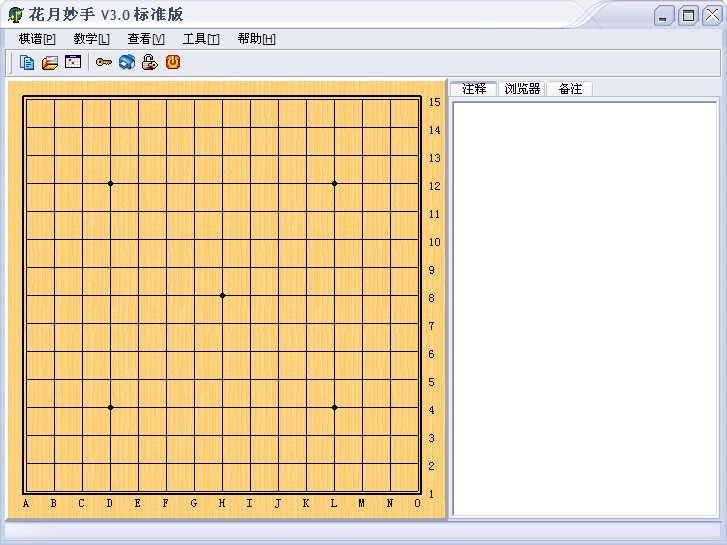

小道消息
#1 小道消息 作者：有志青年 发表时间：2007-3-25 21:05:39

此次可能直接发布3.0版本
#2 Re:小道消息 作者：极地剑客 发表时间：2007-3-25 22:21:51
爽啊~预订个！#3 Re:小道消息 作者：小丸.net 发表时间：2007-3-26 8:36:42
这小子总喜欢拿鸡毛当令剑！#4 Re:小道消息 作者：有志青年 发表时间：2007-3-26 8:55:05


#5 Re:小道消息 作者：yidefei 发表时间：2007-3-28 1:39:10
从这个界面来看更好看了，看了很舒服呢！用定了！#6 Re:小道消息 作者：堇色 发表时间：2007-3-30 23:37:04
ding#7 Re:小道消息 作者：叶昀 发表时间：2007-4-5 15:37:51
好不好用呢？
#8 Re:小道消息 作者：gerbo 发表时间：2007-4-7 20:31:22
老大，催催吧，还没好啊！１＼２＼３＼４＼５，我们等的好辛苦．
#9 Re:小道消息 作者：逆刃 发表时间：2007-4-14 9:13:48
我建议做个支持LIB的，在用RENLIB的时候发现它存在一些不完善的地方，比如很多棋谱经过转换后形状是一样的，只是上下左右的位移有所偏差，如果能将棋谱上下移动，像有个版本的RENJU SOLVER就有这个功能，这样一来会省去很多做棋谱的时间。然后还有点就是我希望能有导出分支的功能。